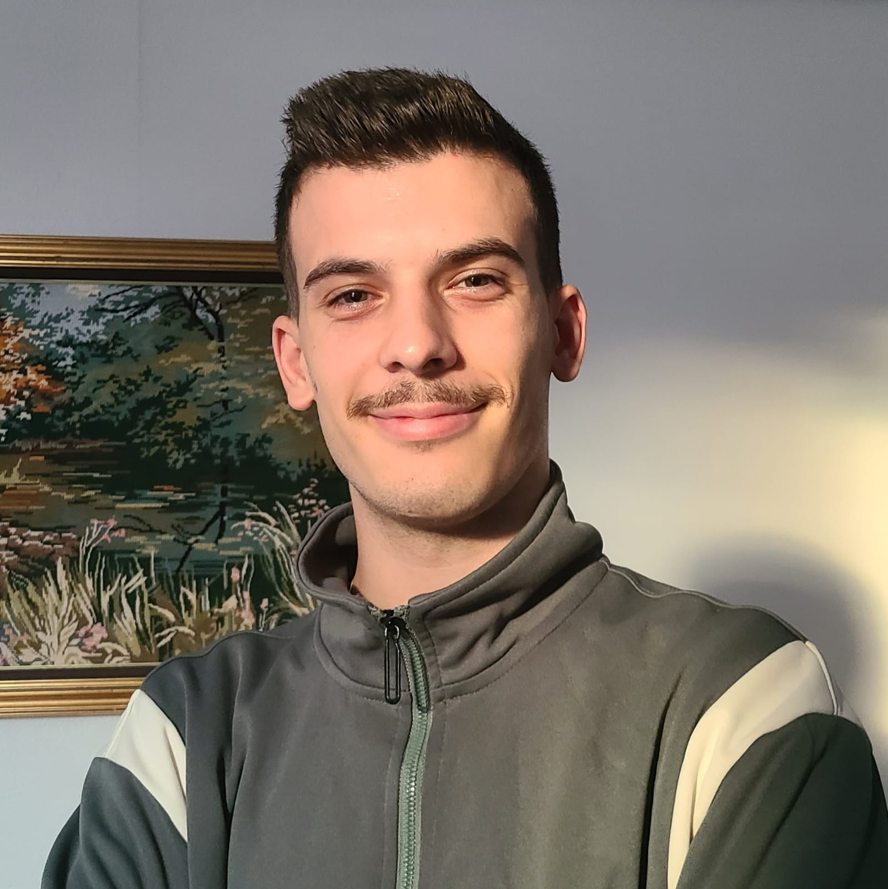

📞 07 80 64 34 12
✉️ rajdimucanji16@gmail.com
📍 54000
Langue Anglais
Langue Albanais
💡 Résolution de problèmes
💪 Travail d’équipe
🚀 Curiosité et apprentissage
⏳ Gestion du temps
🧘 Adaptabilité
📢 Communication
✨ Créativité
BTS SIO | 2024 – présent
Le BTS SIO (Services Informatiques aux Organisations) forme en deux ans à la gestion des systèmes informatiques, des réseaux et au développement d'applications. Je suis spécialisé dans la filière SLAM (Solutions Logicielles et Applications Métier), où j’apprends à concevoir, développer et maintenir des applications informatiques adaptées aux besoins des entreprises. Je travaille principalement sur des langages comme JavaScript, PHP et Java ainsi que sur les bases de données et la gestion des systèmes d’information.
Bac Pro Systèmes Numériques | 2021 – 2024
Le Bac Pro Systèmes Numériques est une formation professionnelle de trois ans qui prépare les élèves à intervenir dans les domaines des réseaux informatiques, des télécommunications et des objets connectés. Elle offre des compétences techniques pour installer, configurer et dépanner des systèmes numériques utilisés dans divers secteurs industriels et tertiaires.
AS Golf Aingeray | as-golf-aingeray.fr
Automatisation de la gestion et de l'inscription aux tournois de golf sous WordPress. Développement de scripts sur mesure via l'extension Snippets (PHP) pour optimiser les processus du club.
ACM Marketing Solutions
Analyse de projets IA (Lovable), intégration de QZ Tray pour les tickets de caisse, et mise en place d'un serveur d'impression Windows local.
Stage de lycée | 2021 – 2023
9 semaines - Mobil Luxembourg - développement d'application portable en Dart et Flutter
Stage de lycée | 2022 – 2024
11 semaines - Evo PC Nancy - Vente de matériel informatique, assemblage de PC, dépannage et assistance à distance.
Voici mes activités : J'ai participé à la vente d'ordinateurs, de composants et d’accessoires informatiques, tout en conseillant les clients sur le matériel le plus adapté à leurs besoins. J’ai également contribué à l’assemblage de PC sur mesure, aussi bien pour le gaming que pour la bureautique. Mon rôle comprenait aussi le diagnostic et la réparation de matériel informatique, ainsi que l’installation et l’optimisation des systèmes et logiciels.
Stage Période 1 : Borne | Conception et développement d'une borne interactive pour répondre aux besoins matériels et logiciels de l'organisation.
Stage Période 2 : Tournois Golf | Automatisation de la gestion et de l'inscription aux tournois de golf via WordPress (Scripts PHP Snippets) pour AS Golf Aingeray.
Challenge 1 : TCG CHAT | Création d'une application de messagerie dédiée aux joueurs de jeux de cartes à collectionner (TCG).
Challenge 2 : VR Forest | Projet de réalité virtuelle collaboratif : modélisation et développement d'un environnement interactif forestier en 3D.
Agora Web & Mobile | Plateforme web et mobile sécurisée (MVC, Guards, Logout) pour la gestion de services.
AnimusOS AC Fanbase | Plateforme communautaire et système d'articles pour l'univers d'Assassin's Creed (Seeders/DB).
Tech-News-Central | Plateforme de veille technologique avec actualités du secteur informatique.
Music Player & Wallpaper Changer | Applications mobiles développées avec Dart et Flutter (Lecteur audio et gestionnaire de fonds d'écran dynamiques).
Cisco Networking Academy | Fondamentaux réseaux et sécurité IoT.
L'Atelier RGPD - CNIL | Maîtrise du Règlement Général sur la Protection des Données.
Certification PIX | Maîtrise globale des compétences numériques.
En tant que développeur, mon objectif est de perfectionner mes compétences techniques en travaillant sur des projets innovants et stimulants. Je vise à acquérir une expertise solide dans le développement d'applications et à contribuer à des initiatives open-source, ce qui me permettra de renforcer mon portfolio et d'évoluer dans ma carrière.
Sur le plan personnel, je souhaite avoir la possibilité de voyager pour explorer différentes cultures et découvrir de nouveaux lieux. Ces expériences enrichissantes me permettront d'élargir ma perspective et d'inspirer ma créativité, tant dans ma vie professionnelle que personnelle.
📞 07 80 64 34 12
✉️ rajdimucanji16@gmail.com
📍 54220 Malzéville
Langue Albanais
Langue Francais
Langue Grec
💡 Problem-solving
💪 Teamwork
🚀 Curiosity and continuous learning
⏳ Time management
🧘 Adaptability
📢 Communication
✨ Creativity
BTS SIO | 2024 – present
The BTS SIO (Services Informatiques aux Organisations) is a two-year program focused on managing IT systems, networks, and application development. I specialize in the SLAM (Software Solutions and Business Applications) track, where I learn to design, develop, and maintain software applications tailored to business needs. My work primarily involves programming languages such as JavaScript, PHP, and Java, as well as databases and information system management.
Professional Baccalaureate in Digital Systems | 2021 – 2024
The "Bac Pro Systèmes Numériques" is a three-year vocational training program that prepares students to work in the fields of "IT networks, telecommunications, and connected devices". It provides technical skills to "install, configure, and troubleshoot digital systems" used in various industrial and service sectors.
AS Golf Aingeray | as-golf-aingeray.fr
Automation of golf tournament management and registration under WordPress. Development of custom scripts via the Snippets extension (PHP) to optimize club processes.
ACM Marketing Solutions
AI project analysis (Lovable), QZ Tray integration for receipts, and local Windows print server setup.
High School Internship | 2021 – 2023
9 weeks - Mobil Luxembourg - Development of mobile applications using Dart and Flutter
I participated in selling computers, components, and accessories while advising customers on the most suitable hardware for their needs. I also contributed to assembling custom PCs, both for gaming and office use. My role included diagnosing and repairing computer hardware, as well as installing and optimizing systems and software.
Stage Period 1: Borne | Design and development of an interactive kiosk to meet the organization's hardware and software needs.
Stage Period 2: Golf Tournaments | Automation of golf tournament management and registration via WordPress (PHP Snippet scripts) for AS Golf Aingeray.
Challenge 1: TCG CHAT | Development of a messaging application dedicated to Trading Card Game (TCG) players.
Challenge 2: VR Forest | Collaborative VR project: modeling and developing a 3D interactive forest environment.
Agora Web & Mobile | Secure web and mobile platform (MVC, Guards, Logout) for service management.
AnimusOS AC Fanbase | Community platform and article system for the Assassin's Creed universe (Seeders/DB).
Tech-News-Central | Technology watch platform with IT industry news/articles.
Music Player & Wallpaper Changer | Mobile applications developed with Dart and Flutter (Audio player and dynamic wallpaper manager).
Cisco Networking Academy | IT networking fundamentals and IoT security.
L'Atelier RGPD - CNIL | Mastery of the General Data Protection Regulation (GDPR).
PIX Certification | Official certification of digital skills.
As a developer, my goal is to refine my technical skills by working on innovative and challenging projects. I aim to gain solid expertise in application development and contribute to open-source initiatives, which will help me strengthen my portfolio and advance in my career.
On a personal level, I aspire to travel and explore different cultures and places. These enriching experiences will broaden my perspective and inspire my creativity, both in my professional and personal life.